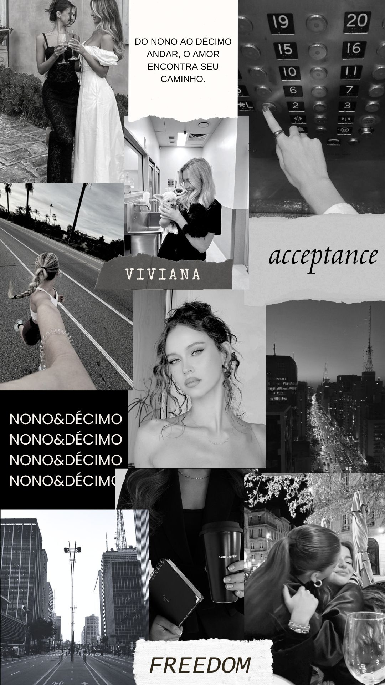
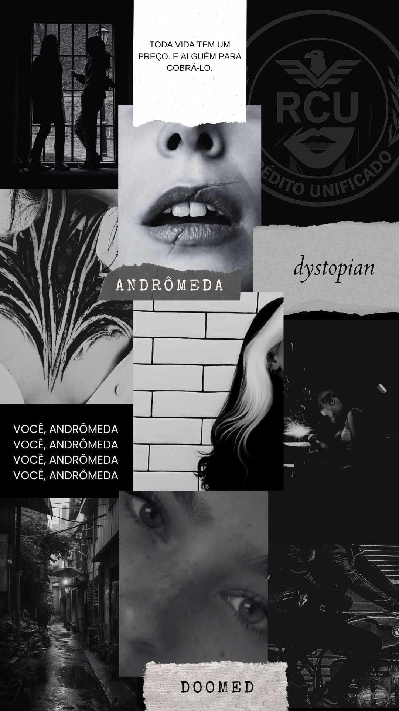
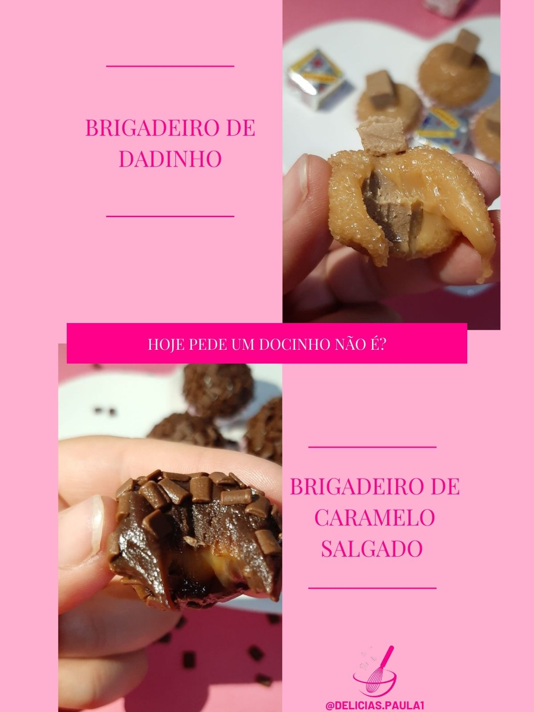
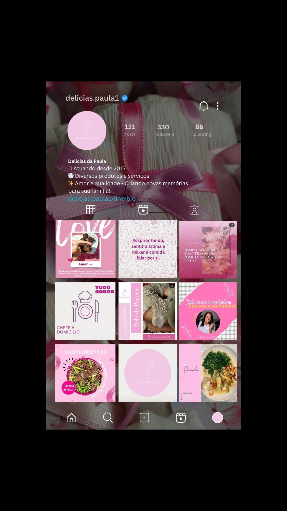
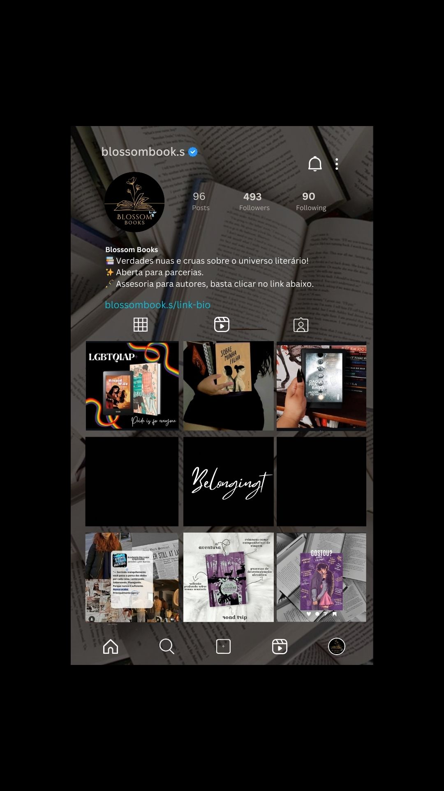

Galeria Criativa
Seis visões, uma ideia central: criar e inspirar!




Copywriter | Criação de Conteúdo | Front-End
Onde escrita, conteúdo e código se conectam!
Cada publicação com propósito e estética.

Palavras que alimentam marcas antes mesmo do prato chegar à mesa.

Literatura transformada em conteúdo.
Um projeto editorial onde escrita, conceito e estética se encontram.
Seis visões, uma ideia central: criar e inspirar!



Eu aprendi tarde demais, que algumas despedidas não fazem barulho. Elas não fecham portas, não dizem adeus, não pedem explicação. Simplesmente acontecem no meio da rotina, entre um café esquecido e uma mensagem que nunca chega. Não era amor no sentido clássico da palavra. Não tinha promessa, não tinha plano, não tinha futuro desenhado em voz alta. Mas tinha presença. Tinha aquela sensação incômoda de que alguém ocupava um espaço que não era oficial, mas era essencial. Nos acostumamos com o que não é nosso de um jeito perigoso, porque quando vai embora, leva junto partes que nem lembravamos de ter entregue. Leva o hábito, o pensamento automático, o silêncio confortável. Algumas pessoas não chegam para ficar. Chegam para bagunçar o lugar onde acreditávamos estar seguras. E depois partem, deixando perguntas que não pedem respostas, apenas convivências.
Trecho retirado do livro não publicado - Querida, isso não é sobre casamentos.
Você já viu como eu penso.
Agora entende como eu escrevo.
O próximo passo, a gente constrói juntos!